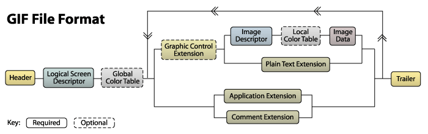
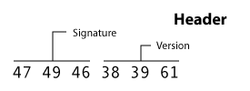
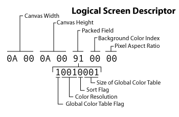
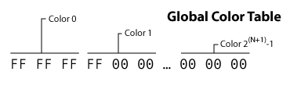
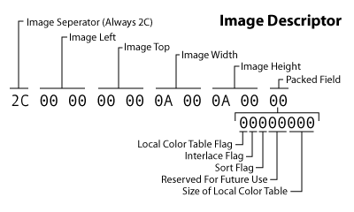
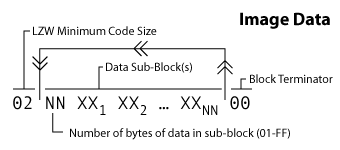
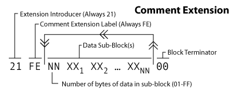
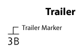

What's In A GIF |
(Bits and bytes) |
The authority on the content of GIFs is the GIF89a specification. Originally developed at CompuServe in the late 1980s, it is now a W3C standard.
A GIF file is made up of a sequence of data blocks. The first two blocks are fixed length and fixed format. Later ones are variable length but self-describing; they consisting of a byte identifying the block type, followed by a payload length byte, followed by payload.
The following railroad diagram shows all of the different types of blocks and where they can be in the file. Every path following the arrows corresponds to a valid block sequence. The large middle secction, in particular, can be repeated any number of times.

We will learn more by walking through a sample GIF file. You can see the sample file and its corresponding bytes below.
Actual Size(10x10) |
Enlarged (100x100) |
Bytes47 49 46 38 39 61 0A 00 0A 00 91 00 00 FF FF FF FF 00 00 00 00 FF 00 00 00 21 F9 04 00 00 00 00 00 2C 00 00 00 00 0A 00 0A 00 00 02 16 8C 2D 99 87 2A 1C DC 33 A0 02 75 EC 95 FA A8 DE 60 8C 04 91 4C 01 00 3B |
Note that not all possible block types are represented in this sample file. Later we'll provide samples of missing block types where appropriate. The different types of blocks include: header, logical screen descriptor, global color table, graphics control extension, image descriptor, local color table, image data, plain text extension, application extension, comment extension, and trailer. Let's get started with the first block!
From the sample file: 47 49 46 38 39 61
All GIF files must start with a header block. The header takes up the first six bytes of the file. These bytes should all correspond to ASCII character codes. The first three bytes are called the signature. These should always be "GIF" (ie 47="G", 49="I", 46="F"). The next three specify the version of the specification that was used to encode the image.
Normally the version string will be either "89a" (ie 38="8", 39="9",61="a") or "87a" (ie 38="8", 37="7",61="a"). All modern GIF-processing software recognizes both versions, For maximum compatibility, GIFLIB will normally write an 87a signature unless the file contains GIF89 features.

From Sample File: 0A 00 0A 00 91 00 00
The logical screen descriptor always immediately follows the header. This block tells the decoder how much room this image will take up. It is exactly seven bytes long. It starts with the canvas width and canvas height. These value can be found in the first two pairs of two bytes each. Both are 16-bit, nonnegative integers (0-65,535).
As with all the other multi-byte values in the GIF format, the least significant byte is stored first (little-endian format). This means where we would read 0A 00 from the byte stream, we would normally write it as 000A which is the same as 10. Thus the width of our sample image is 10 pixels. As a further example 255 would be stored as FF 00 but 256 would be 00 01 .
The canvas width and height are usually ignored by modern viewers. The GIF format seems to have been designed with the idea that viewers would render multiple images in a GIF on a common canvas, giving an effect like a picture wall. But nowadays multiple-image GIFs are generally used either as animations in which each sub-image is a frame or as image libraries, with the GIF client handling compositing into some canvas about which the GIF format holds no information.Thus, the canvas width and height are mainly fossils. GIFLIB does extract them and allow you to set them, however.
The next byte contains four fields of packed data, the "logical screen descriptor". To understand these, we need to expand the byte 91 to binary as 10010001 and look at the fields inside it.

The first (most-significant) bit is the global color table flag. If it's 0, then there is no global color table. If it's 1, then a global color table will follow. In our sample image, we can see that we will have a global color table (as will usually be the case).
The next three bits are the color resolution. They are only meaningful if there is a global color table, and allow you to compute its size. If the value of this filed is N, the number of entries in the global color table will be 2 ^ (N+1) - that is, two raised to the power (N+1). Thus, the 001 in the sample image represents 2 bits/pixel; 111 would represent 8 bits/pixel.
The GIF format shows its age here. A more modern design would simply have allocated a byte or two for color table length. But GIF was designed when memory was much more expensive than it is today, and the designers felt strong pressure to economize on every bit. The consequence is that color table lengths have to be an exact power of two. Perversely, this can force a waste of memory space in images with odd color counts.
The next single bit is the sort flag. If the values is 1, then the colors in the global color table are sorted in order of "decreasing importance," which typically means "decreasing frequency" in the image. This can help the image decoder, but is not required. In the sample file this value has been left at 0.
The sort flag reflected the high cost of dual-port memory at the time the GIF specification was written in the late 1980s. That kind of limit disappeared in the mid-1990s, and modern GIF software ignores this flag. Until version 5.0, GIFLIB ignored it on input and zeroed it on output; 5.0 and later versions read and preserve it.
The next byte gives us the background color index. This byte is only meaningful if the global color table flag is 1, and if there is no global color table, this byte should be 0.. To understand it you have to remember the original "picture wall" rendering model for GIFs in which sub-images are composited onto a larger canvas. It represents which index in the global color table should be used for pixels on the virtual canvas that aren't overlayed by an image. GIFLIB supports reading and setting this byte, but modern viewers and browsers generally have no use for it.
The last byte of the logical screen descriptor is the pixel aspect ratio. Modern viewers don't use this. Until 5.0, GIFLIB ignored this flag on input and zeroed it on output; now it is read and preserved if present. The GIF standard doesn't give a rationale for it, but it seems likely that the designers intended it for representing image captures from the analog television of the day, which had rectangular pixel-equivalents. The GIF specification says that if there was a value specified in this byte, N, the actual ratio used would be (N + 15) / 64 for all N<>0.
From the sample file: FF FF FF FF 00 00 00 00 FF 00 00 00
GIFs can have either a global color table or local color tables for each sub-image. Each color table consists of a list of RGB (Red-Green-Blue) color component intensities, three bytes for each color, with intensities ranging from 0 (least) to 255 (most). The color (0,0,0) is deepest black, the color (255,255,255) brightest white. The other extreme colors are red at (255,0,0), green at (0,255,0) and blue at (0,0,255).
As previously noted, the length of the global color table is 2^(N+1) entries where N is the value of the color depth field in the logical screen descriptor. The table will take up 3*2^(N+1) bytes in the stream.
| Size In Logical Screen Desc | Number Of Colors | Byte Length |
|---|---|---|
| 0 | 2 | 6 |
| 1 | 4 | 12 |
| 2 | 8 | 24 |
| 3 | 16 | 48 |
| 4 | 32 | 96 |
| 5 | 64 | 192 |
| 6 | 128 | 384 |
| 7 | 256 | 768 |
Our sample file has a global color table size of 1. This means it holds 2^(1+1)=2^2=4 colors. We can see that it takes up 12, (3*4), bytes as expected. We read the bytes three at a time to get each of the colors. The first color is #FFFFFF (white). This value is given an index of 0. The second color is #FF0000 (red). The color with an index value of 2 is #0000FF (blue). The last color is #000000 (black). The index numbers will be important when we decode the actual image data.
Note that this block is labeled as "optional." Not every GIF has to specify a global color table. However, if the global color table flag is set to 1 in the logical screen descriptor block, the color table is then required to immediately follow that block.

From the sample file: 21 F9 04 00 00 00 00 00
Graphic control extension blocks are used to specify transparency settings and control animations. They are an optional GIF89 extension. The semantics of this extension will be described in detail in a later section (see Transparency and Animation); for completeness we'll describe the data fields here.
The first byte is the extension introducer. All extension blocks begin with 21. Next is the graphic control label, F9, which is the value that flags this as a graphic control extension. Third up is the total block size in bytes. Next is a packed field. Bits 1-3 are reserved for future use. Bits 4-6 indicate disposal method. The penultimate bit is the user input flag and the last is the transparent color flag. The delay time value follows in the next two bytes stored in unsigned format. After that we have the transparent color index byte. Finally we have the block terminator which is always 00.

From the sample file: 2C 00 00 00 00 0A 00 0A 00 00
A single GIF file may contain multiple images. In the original GIF rendering model these wwere meant to be composited onto a larger virtual canvas. Nowadays nultiple images are normally used for animations.
Each image begins with an image descriptor block. This block is exactly 10 bytes long.
The first byte is the image separator. Every image descriptor begins with the value 2C. The next 8 bytes represent the location and size of the following image.
An image in the stream may not necessarily take up the entire canvas size defined by the logical screen descriptor. Therefore, the image descriptor specifies the image left position and image top position of where the image should begin on the canvas. Both these fields are usually ignored by modern viewers and browsers.
Next, this block specifies the image width and image height. Each of these values is in the two-byte, unsigned little-endian format. Our sample image indicates that the image starts at (0,0) and is 10 pixels wide by 10 pixels tall. (This image does take up the whole canvas size.)
The last byte is another packed field. In our sample file this byte is 0 so all of the sub-values will be zero. The first (most significant) bit in the byte is the local color table flag. Setting this flag to 1 allows you to specify that the image data that follows uses a different color table than the global color table. (More information on the local color table follows.)
The second bit is the interlace flag. Interlacing changes the way images are rendered onto the screen in a way that may reduce annoying visual flicker. The effect of interlacing on a display is that the first pass of appears immediately, displaying the graphic as a first as a blur and then sharpenining it up as later passes fill in lines. That allows the human viewer to at least get an idea of what's coming up rather than waiting for the entire image to be painted, line by line. See an example. To support this, the scan lines of the image need to be stored in a different order than the normal top-down, separated into sections that will be rendered in four separate passes.

A local color table is organized the same as a global color table. The local color table would always immediately follow an image descriptor but will only be there if the local color table flag is set to 1. It is effective only for the block of image data that immediately follows it. If no local color table is specified, the global color table is used for the following image data.
The size of the local color table can be calculated by the value given in the image descriptor. Just like with the global color table, if the image descriptor specifies a size of N, the color table will contain 2^(N+1) colors and will take up 3*2^(N+1) bytes.
From the sample file: 02 16 8C 2D 99 87 2A 1C DC 33 A0 02 75 EC 95 FA A8 DE 60 8C 04 91 4C 01 00
Finally we get to the actual image data. The image data is composed of a series of output codes which tell the decoder which colors to emit to the canvas. These codes are combined into the bytes that make up the block.
There's another section on decoding these output code into an image (see LZW Image Data). Here we'll just see how to determine how long the block will be.
The first byte of this block is the LZW minimum code size. This value is used to decode the compressed output codes. (Again, see the section on LZW compression to see how this works.) The rest of the bytes represent data sub-blocks. Data sub-blocks are are groups of 1 - 256 bytes. The first byte in the sub-block tells you how many bytes of actual data follow. This can be a value from 0 (00) it 255 (FF). After you've read those bytes, the next byte you read will tell you now many more bytes of data follow that one. You continue to read until you reach a sub-block that says that zero bytes follow.
You can see our sample file has a LZW minimum code size of 2. The next byte tells us that 22 bytes of data follow it (16 hex = 22). After we've read those 22 bytes, we see the next value is 0. This means that no bytes follow and we have read all the data in this block.

Example (not in the sample file): 21 01 0C 00 00 00 00 64 00 64 00 14 14 01 00 0B 68 65 6C 6C 6F 20 77 6F 72 6C 64 00
The GIF89 specification allows you to specify text captions to be overlayed on the following image. This feature never took off; browsers and image-processing applications such as Photoshop ignore it, and GIFLIB doesn't try to interpret it.
The block begins with an extension introducer as all extension block types do. This value is always 21. The next byte is the plain text label. This value of 01 is used to distinguish plain text extensions from all other extensions. The next byte is the block size. This tells you how many bytes there are until the actual text data begins, or in other words, how many bytes you can now skip. The byte value will probably be 0C which means you should jump forward 12 bytes. The text that follows is encoded in data sub-blocks (see Image Data to see how these sub-blocks are formed). The block ends when you reach a sub-block of length 0.
Example (not in sample file): 21 FF 0B 4E 45 54 53 43 41 50 45 32 2E 30 03 01 05 00 00
The GIF89 specification allows for application-specific information to be embedded in the GIF file itself. This capability is not much used. About the only known public one is the Netscape 2.0 extension (described below) which is used to loop an animated GIF file. We'll go into more detail on looping in when we talk about animation.
The Netscape 2.0 looping block must appear immediately after the global color table of the logical screen descriptor. It is 19 bytes long.
byte 1 : 33 (hex 0x21) GIF Extension code
byte 2 : 255 (hex 0xFF) Application Extension Label
byte 3 : 11 (hex 0x0B) Length of Application Block
(eleven bytes of data to follow)
bytes 4 to 11 : "NETSCAPE"
bytes 12 to 14 : "2.0"
byte 15 : 3 (hex 0x03) Length of Data Sub-Block
(three bytes of data to follow)
byte 16 : 1 (hex 0x01)
bytes 17 to 18 : 0 to 65535, an unsigned integer in
little-endian byte format. This specifies the
number of times the loop should
be executed.
byte 19 : 0 (hex 0x00) a Data Sub-Block Terminator.
As with all extensions, we start with 21 which is the extension introducer. Next is the extension label which for application extensions is FF. The next value is the block size which tells you how many bytes there are before the actual application data begins. This byte value should be 0B which indicates 11 bytes. These 11 bytes hold two pieces of information. First is the application identifier which takes up the first 8 bytes. These bytes should contain ASCII character codes that identify to which application the extension belongs. In the case of the example above, the application identifier is "NETSCAPE" which is conveniently 8 characters long. The next three bytes are the application authentication code. The spec says these bytes can be used to "authenticate the application identifier." With the Netscape 2.0 extension, this value is simply a version number, "2.0", hence the extensions name. What follows is the application data broken into data sub-blocks. As with the other extensions, the block terminates when you read a sub-block that has zero bytes of data.
Example (not in sample file): 21 FE 09 62 6C 75 65 62 65 72 72 79 00
One last GIF89 extension type is the comment extension. This allows you to embed ASCII text in a GIF file, and is sometimes used to include an image description, image credit, or other human-readable metadata such as the GPS location of the image capture.
It's probably no surprise by now that the first byte is the extension introducer which is 21. The next byte is always FE which is the comment label. Then we jump right to data sub-blocks containing ASCII character codes for your comment. As you can see from the example we have one data sub-block that is 9 bytes long. If you translate the character codes you see that the comment is "blueberry." The final byte, 00, indicates a sub-block with zero bytes that follow which let's us know we have reached the end of the block.

From sample file: 3B
The trailer block indicates when you've reached the end of the file. It is always a byte with a value of 3B.

Now that you know what the basic parts of a GIF file are, let's next focus our attention on how the actual image data is stored and compressed.